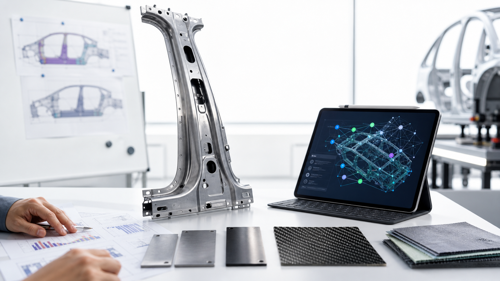

18h→ 30min
教育内容 · 公开 GenAI 案例
把 18 小时博客工作压缩为 30 分钟
从选题、写作到 SEO，建立可重复内容流程，并培训团队共同使用。
Case studies & blog
案例&博客不只展示技术细节，也回答为什么做、如何做、谁参与、怎样验证，以及下一步如何扩展。
公开案例摘要：先稳住关键系统，再把安装、物流、产品、QA 和移动应用纳入长期协作。
查看案例详情 →从选题、写作到 SEO，建立可重复内容流程，并培训团队共同使用。
减少高频问答，让团队把时间转向复杂服务和销售机会。
建设符合教学法与学生进度的课程和活动规划助手。
减少手工提取和整理，计划加入图表、摘要和多轮查询。
 制造业
制造业把静态管线图纸变成可查询、可关联、可由工程师复核的运营知识网络。
阅读案例 ↗ 医疗工作流
医疗工作流把就诊前中后和患者语音入口拆成可验收、可追踪、可升级人工的生产级流程。
阅读案例 ↗
汽车 DFMEA以 B 柱为例，把材料、工艺、失效机理和法规要求连成可推理、可追溯、可复评的风险情报系统。
阅读案例 ↗ 供应链决策
供应链决策从控制塔的数据可见性，走向自然语言查询、异常钻取、根因归因和行动协同的完整决策链。
阅读案例 ↗ 金融文档自动化
金融文档自动化围绕银行对账单、W-2、1099-B 和供应商合同，讲清 Blueprint 如何把文档提取变成可复用工作流。
阅读案例 ↗ 虚拟分析师
虚拟分析师从 SQL 等待、指标口径和数据治理出发，说明金融企业如何把对话式 AI 建在可靠数据基础上。
阅读案例 ↗ Agent 评估
Agent 评估从原型到生产的鸿沟、ADLC 飞轮、持续评估、可观测性和可评估架构。
阅读案例 ↗通过 AI 应用减少大量人工文档处理，并保留质量控制。
把分散制度转为按权限检索、带引用的员工服务入口。
案例&博客持续收录可拆解、可复用、可验证的企业 AI 落地样板，帮助团队把标杆实践转化为自己的场景诊断与交付路径。
A useful case study
原来的业务问题和基线是什么？
为什么选择这个场景和方法？
数据、系统、团队和风险如何处理？
用哪些指标证明效果？
下一步如何运营和扩展？